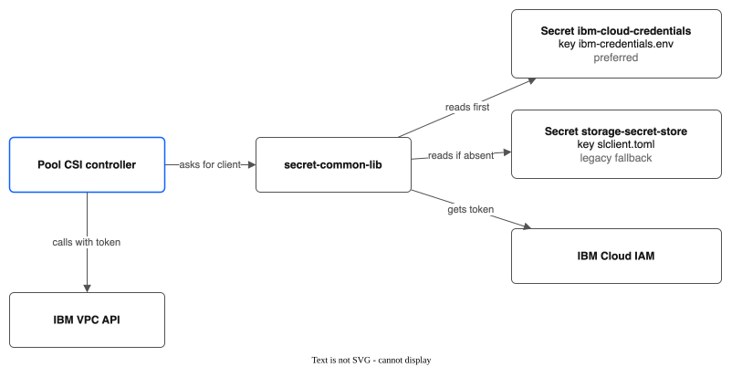
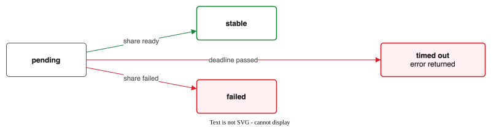

IBM VPC API Reference¶
SDK¶
Use the official IBM VPC Go SDK: github.com/IBM/vpc-go-sdk
Documentation: https://github.com/IBM/vpc-go-sdk
Install:
Authentication — Using secret-common-lib¶
We reuse the same authentication infrastructure as the stock IBM CSI drivers. This means our driver works out of the box on any ROKS/ROVS/IKS cluster — no separate API key setup required.
Import the shared library:
How It Works¶
IBM's secret-common-lib reads credentials from Kubernetes secrets that already exist on managed ROKS/ROVS/IKS clusters. It supports two authentication methods:
- API key —
IBMCLOUD_AUTHTYPE=iam+IBMCLOUD_APIKEY(traditional) - Pod identity / Trusted profiles —
IBMCLOUD_AUTHTYPE=pod-identity+IBMCLOUD_PROFILEID(no long-lived keys)
The library handles IAM token exchange, caching, and renewal automatically.

Secret Lookup Order¶
The library checks credentials in this order:
1. ibm-cloud-credentials secret (key: ibm-credentials.env) — preferred
2. storage-secret-store secret (key: slclient.toml) — legacy fallback
On managed ROKS/ROVS/IKS clusters, storage-secret-store is pre-populated by the add-on system. The ibm-cloud-credentials secret is the newer format and supports pod identity.
Kubernetes Secrets Format¶
ibm-cloud-credentials (preferred — env file format, base64-encoded):
# API key auth:
IBMCLOUD_AUTHTYPE=iam
IBMCLOUD_APIKEY=<api-key>
# Or pod identity auth (no long-lived key):
IBMCLOUD_AUTHTYPE=pod-identity
IBMCLOUD_PROFILEID=<trusted-profile-id>
storage-secret-store (legacy — TOML format):
[Bluemix]
iam_url = "https://iam.cloud.ibm.com"
iam_api_key = "<api-key>"
[VPC]
g2_token_exchange_endpoint_url = "https://iam.cloud.ibm.com"
g2_riaas_endpoint_url = "https://us-south.iaas.cloud.ibm.com/v1"
g2_resource_group_id = "<resource-group-id>"
g2_api_key = "<api-key>"
ConfigMaps Used¶
The library and our driver also read these ConfigMaps (pre-populated on managed clusters):
ibm-cloud-provider-data— contains VPC ID and subnet IDsibm-cloud-cluster-info— contains cluster ID and account IDcloud-conf(optional) — JSON with region, RIAAS endpoint, resource group ID
Managed vs. Unmanaged Provider¶
| Mode | IKS_ENABLED env |
How It Works |
|---|---|---|
| Managed (ROKS/ROVS/IKS) | true |
Sidecar container watches secrets, auto-refreshes tokens via projected service account token, LRU cache for multi-secret support |
| Unmanaged (self-managed OCP/K8s) | false |
Reads secret directly in-process, no auto-refresh, pod restart required on key rotation |
On ROKS/ROVS/IKS clusters, use managed mode. On self-managed clusters, use unmanaged mode.
Client Initialization¶
package ibmcloud
import (
"context"
"fmt"
secretlib "github.com/IBM/secret-common-lib/pkg/secret_provider"
"github.com/IBM/go-sdk-core/v5/core"
"github.com/IBM/vpc-go-sdk/vpcv1"
"golang.org/x/time/rate"
"k8s.io/client-go/kubernetes"
)
type Client struct {
vpcService *vpcv1.VpcV1
secretProvider secretlib.SecretProviderInterface
region string
rateLimiter *rate.Limiter
}
// NewClient creates a VPC API client using the cluster's existing credentials.
// It uses secret-common-lib to read API keys or pod identity tokens from the
// same secrets that the stock IBM CSI drivers use.
func NewClient(k8sClient kubernetes.Interface, region string) (*Client, error) {
// Initialize the secret provider (reads IKS_ENABLED env to choose managed/unmanaged)
secretProvider, err := secretlib.NewSecretProvider(k8sClient, nil)
if err != nil {
return nil, fmt.Errorf("failed to initialize secret provider: %w", err)
}
// Get an IAM token from the cluster's credentials
token, _, err := secretProvider.GetDefaultIAMToken("vpc-file-pool-csi-init", false)
if err != nil {
return nil, fmt.Errorf("failed to get initial IAM token: %w", err)
}
// Get VPC API endpoint from the secret provider
riaasEndpoint := secretProvider.GetRIAASEndpoint()
if riaasEndpoint == "" {
riaasEndpoint = fmt.Sprintf("https://%s.iaas.cloud.ibm.com/v1", region)
}
// Create the VPC service with a bearer token authenticator
// The token will be refreshed before each API call (see refreshToken method)
authenticator := &core.BearerTokenAuthenticator{
BearerToken: token,
}
vpcService, err := vpcv1.NewVpcV1(&vpcv1.VpcV1Options{
Authenticator: authenticator,
URL: riaasEndpoint,
})
if err != nil {
return nil, fmt.Errorf("failed to create VPC service: %w", err)
}
return &Client{
vpcService: vpcService,
secretProvider: secretProvider,
region: region,
rateLimiter: rate.NewLimiter(rate.Every(time.Second), 5),
}, nil
}
// refreshToken gets a fresh IAM token from secret-common-lib and updates
// the VPC service authenticator. Call this before any VPC API operation.
func (c *Client) refreshToken(ctx context.Context, reason string) error {
token, _, err := c.secretProvider.GetDefaultIAMToken(reason, false)
if err != nil {
return fmt.Errorf("failed to refresh IAM token: %w", err)
}
// Update the bearer token on the authenticator
auth, ok := c.vpcService.Service.Options.Authenticator.(*core.BearerTokenAuthenticator)
if !ok {
return fmt.Errorf("unexpected authenticator type")
}
auth.BearerToken = token
return nil
}
// withAuth wraps a VPC API call with token refresh and rate limiting.
// Use this before every API call.
func (c *Client) withAuth(ctx context.Context, operation string) error {
if err := c.rateLimiter.Wait(ctx); err != nil {
return fmt.Errorf("rate limiter: %w", err)
}
if err := c.refreshToken(ctx, operation); err != nil {
return err
}
return nil
}
Pod Identity Setup (for clusters that use Trusted Profiles)¶
If the cluster uses pod identity instead of API keys, the controller Deployment needs a projected service account token volume:
# In the controller Deployment spec
volumes:
- name: vault-token
projected:
sources:
- serviceAccountToken:
path: vault-token
expirationSeconds: 600
containers:
- name: csi-controller
volumeMounts:
- mountPath: /var/run/secrets/tokens
name: vault-token
The secret-common-lib managed provider automatically uses this projected token when IBMCLOUD_AUTHTYPE=pod-identity.
Fallback: Standalone API Key (Self-Managed Clusters)¶
On self-managed clusters that don't have the IBM CSI add-on installed, there won't be a storage-secret-store or ibm-cloud-credentials secret. In that case, the operator creates the ibm-cloud-credentials secret manually:
# Create the credentials env file
cat > /tmp/ibm-credentials.env << 'EOF'
IBMCLOUD_AUTHTYPE=iam
IBMCLOUD_APIKEY=<your-api-key>
EOF
# Create the Kubernetes secret
kubectl create secret generic ibm-cloud-credentials \
--namespace kube-system \
--from-file=ibm-credentials.env=/tmp/ibm-credentials.env
rm /tmp/ibm-credentials.env
The secret-common-lib will find and use this secret automatically.
---
## File Share Operations
### Create File Share
Called by the Pool Manager when a new share is needed in a pool.
**This is a SLOW operation (30-90+ seconds).** Never call this in the CSI CreateVolume hot path.
Every share is created in **security group access mode** with one inline mount target. IBM ended new VPC-mode mount targets: the API returns HTTP 501 `shares_not_implemented` for them (seen in eu-de, October 2026), and VPC access mode reaches End of Support on 6 May 2027.
```go
type CreateShareInput struct {
Name string
Zone string
Profile string
SizeGB int64
IOPS *int64
ResourceGroupID string
Tags []string
EncryptInTransit bool
SubnetID string // worker subnet in Zone; required
SecurityGroupIDs []string // groups on the mount target's network interface
}
func (c *Client) CreateFileShare(ctx context.Context, input CreateShareInput) (*ShareInfo, error) {
// ... profile, zone, size, IOPS, resource group, tags, initial owner 65534 ...
if input.SubnetID == "" {
return nil, fmt.Errorf("create share %q: subnet ID is required for the mount target", input.Name)
}
sharePrototype.AccessControlMode = core.StringPtr("security_group")
sharePrototype.MountTargets = []vpcv1.ShareMountTargetPrototypeIntf{
// A virtual network interface (VNI) in SubnetID, protected by SecurityGroupIDs.
securityGroupMountTarget(input.Name+"-mt", input.SubnetID, input.SecurityGroupIDs,
input.EncryptInTransit, input.ResourceGroupID),
}
// Create (adopting an existing share of the same name on HTTP 400 "already exists"),
// wait for "stable", then poll until the mount target's mount_path is known.
}
The NFS server and the export path both come from the mount target's mount_path, for example 10.250.0.18:/83ad9ea6_1be6_.... The export path is specific to the share; it is never /. A mount target that has an IP address but no mount_path yet is not usable, and the driver leaves its address empty until the path appears.
Create Share Mount Target¶
Called by the reconciler to give a mount target to a stable share that has none. It uses the same subnet and security groups as a new share.
type CreateMountTargetInput struct {
Name string
SubnetID string
SecurityGroupIDs []string
EncryptInTransit bool
}
func (c *Client) CreateShareMountTarget(ctx context.Context, shareID string, input CreateMountTargetInput) (*MountTargetInfo, error)
Subnet Zone and Cluster Security Group¶
// GetSubnetZone returns the zone of a subnet. The pool manager calls it for each
// worker subnet once, and picks the subnet in the pool's zone.
func (c *Client) GetSubnetZone(ctx context.Context, subnetID string) (string, error)
// FindSecurityGroupID returns the ID of the named security group in a VPC.
// The pool manager uses it to find the cluster group, kube-<cluster ID>.
func (c *Client) FindSecurityGroupID(ctx context.Context, vpcID, name string) (string, error)
getShareByName (Internal — Idempotent Share Lookup)¶
When CreateFileShare gets HTTP 400 "already exists" (e.g., reconciler retried after a status update conflict), this method looks up the existing share by name via ListShares with a name filter, waits for stable state, and returns its full info including mount target IPs.
Wait for Share Stable¶
VPC file shares go through lifecycle states: pending → stable → (or failed).

func (c *Client) waitForShareStable(ctx context.Context, shareID string, timeout time.Duration) (*ShareInfo, error) {
deadline := time.Now().Add(timeout)
for {
if time.Now().After(deadline) {
return nil, fmt.Errorf("timed out waiting for share %s to become stable", shareID)
}
info, err := c.GetFileShare(ctx, shareID)
if err != nil {
return nil, err
}
switch info.LifecycleState {
case "stable":
return info, nil
case "failed":
return nil, fmt.Errorf("share %s entered failed state", shareID)
case "pending":
// Still creating, wait and retry
select {
case <-ctx.Done():
return nil, ctx.Err()
case <-time.After(10 * time.Second):
continue
}
default:
select {
case <-ctx.Done():
return nil, ctx.Err()
case <-time.After(10 * time.Second):
continue
}
}
}
}
Get File Share¶
type ShareInfo struct {
ID string
Name string
LifecycleState string // "pending", "stable", "failed", etc.
SizeGB int64
IOPS int64
Profile string
Zone string
MountTargets []MountTargetInfo
CreatedAt time.Time
}
type MountTargetInfo struct {
ID string
Name string
IPAddress string // NFS server IP or FQDN
ExportPath string // NFS export path (e.g. "/share_abc123"); empty defaults to "/"
Zone string // VPC zone of this mount target (for cross-zone support)
}
func (c *Client) GetFileShare(ctx context.Context, shareID string) (*ShareInfo, error) {
opts := c.vpcService.NewGetShareOptions(shareID)
share, response, err := c.vpcService.GetShareWithContext(ctx, opts)
if err != nil {
if response != nil && response.StatusCode == 404 {
return nil, ErrShareNotFound
}
return nil, fmt.Errorf("VPC API GetShare failed: %w", err)
}
info := &ShareInfo{
ID: *share.ID,
Name: *share.Name,
LifecycleState: *share.LifecycleState,
SizeGB: *share.Size,
IOPS: *share.Iops,
Profile: *share.Profile.(*vpcv1.ShareProfileReference).Name,
Zone: *share.Zone.(*vpcv1.ZoneReference).Name,
CreatedAt: time.Time(*share.CreatedAt),
}
// Extract mount targets
for _, mt := range share.MountTargets {
mtRef := mt.(*vpcv1.ShareMountTargetReference)
// Need to fetch full mount target to get IP
mtInfo, err := c.getMountTarget(ctx, shareID, *mtRef.ID)
if err != nil {
continue
}
info.MountTargets = append(info.MountTargets, *mtInfo)
}
return info, nil
}
Expand File Share¶
func (c *Client) ExpandFileShare(ctx context.Context, shareID string, newSizeGB int64) error {
opts := c.vpcService.NewUpdateShareOptions(shareID, map[string]interface{}{
"size": newSizeGB,
})
_, response, err := c.vpcService.UpdateShareWithContext(ctx, opts)
if err != nil {
return fmt.Errorf("VPC API UpdateShare (expand) failed (HTTP %d): %w", response.StatusCode, err)
}
// Wait for expansion to complete
_, err = c.waitForShareStable(ctx, shareID, 5*time.Minute)
return err
}
Delete File Share¶
Called by Pool Manager when shrinking a pool or during cleanup.
func (c *Client) DeleteFileShare(ctx context.Context, shareID string) error {
// First delete all mount targets
share, err := c.GetFileShare(ctx, shareID)
if err != nil {
if errors.Is(err, ErrShareNotFound) {
return nil // Already deleted, idempotent
}
return err
}
for _, mt := range share.MountTargets {
opts := c.vpcService.NewDeleteShareMountTargetOptions(shareID, mt.ID)
_, err := c.vpcService.DeleteShareMountTargetWithContext(ctx, opts)
if err != nil {
return fmt.Errorf("failed to delete mount target %s: %w", mt.ID, err)
}
}
// Then delete the share
// Use the If-Match header with ETag for safe deletion
deleteOpts := c.vpcService.NewDeleteShareOptions(shareID)
_, response, err := c.vpcService.DeleteShareWithContext(ctx, deleteOpts)
if err != nil {
if response != nil && response.StatusCode == 404 {
return nil // Already deleted
}
return fmt.Errorf("VPC API DeleteShare failed: %w", err)
}
return nil
}
List File Shares¶
Used by the reconciler to discover existing shares (e.g., on startup).
func (c *Client) ListFileShares(ctx context.Context, resourceGroupID string, tags []string) ([]*ShareInfo, error) {
var allShares []*ShareInfo
var start *string
for {
opts := c.vpcService.NewListSharesOptions()
if resourceGroupID != "" {
opts.SetResourceGroupID(resourceGroupID)
}
if start != nil {
opts.SetStart(*start)
}
opts.SetLimit(100)
result, _, err := c.vpcService.ListSharesWithContext(ctx, opts)
if err != nil {
return nil, fmt.Errorf("VPC API ListShares failed: %w", err)
}
for _, share := range result.Shares {
info := shareToInfo(&share)
allShares = append(allShares, info)
}
if result.Next == nil || result.Next.Href == nil {
break
}
// Parse the "start" parameter from the Next URL
start = parseStartFromURL(*result.Next.Href)
}
return allShares, nil
}
Client Interface (for Testing)¶
Define an interface so the real client can be swapped with a fake in tests:
// pkg/ibmcloud/client.go
type VPCFileClient interface {
CreateFileShare(ctx context.Context, input CreateShareInput) (*ShareInfo, error)
GetFileShare(ctx context.Context, shareID string) (*ShareInfo, error)
ExpandFileShare(ctx context.Context, shareID string, newSizeGB int64) error
DeleteFileShare(ctx context.Context, shareID string) error
ListFileShares(ctx context.Context, resourceGroupID string, tags []string) ([]*ShareInfo, error)
CreateShareMountTarget(ctx context.Context, shareID string, input CreateMountTargetInput) (*MountTargetInfo, error)
GetSubnetZone(ctx context.Context, subnetID string) (string, error)
FindSecurityGroupID(ctx context.Context, vpcID, name string) (string, error)
}
// Verify the real client implements the interface
var _ VPCFileClient = (*Client)(nil)
Fake Client¶
// pkg/ibmcloud/fake/fake_client.go
type FakeClient struct {
mu sync.Mutex
shares map[string]*ibmcloud.ShareInfo
nextID int
}
func NewFakeClient() *FakeClient {
return &FakeClient{
shares: make(map[string]*ibmcloud.ShareInfo),
}
}
func (f *FakeClient) CreateFileShare(ctx context.Context, input ibmcloud.CreateShareInput) (*ibmcloud.ShareInfo, error) {
f.mu.Lock()
defer f.mu.Unlock()
f.nextID++
id := fmt.Sprintf("r006-fake-%04d", f.nextID)
info := &ibmcloud.ShareInfo{
ID: id,
Name: input.Name,
LifecycleState: "stable",
SizeGB: input.SizeGB,
IOPS: 1000,
Profile: input.Profile,
Zone: input.Zone,
MountTargets: []ibmcloud.MountTargetInfo{
{
ID: id + "-mt",
Name: input.Name + "-mt",
IPAddress: fmt.Sprintf("10.240.0.%d", f.nextID),
},
},
CreatedAt: time.Now(),
}
f.shares[id] = info
return info, nil
}
// ... implement other methods similarly
Error Handling¶
Define sentinel errors for clean error propagation:
var (
ErrShareNotFound = errors.New("VPC file share not found")
ErrShareNotStable = errors.New("VPC file share is not in stable state")
ErrShareCreationFailed = errors.New("VPC file share creation failed")
ErrAPIRateLimit = errors.New("VPC API rate limit exceeded")
ErrAuthentication = errors.New("VPC API authentication failed")
)
Map VPC API HTTP status codes:
- 404 → ErrShareNotFound
- 429 → ErrAPIRateLimit (retry with backoff)
- 401/403 → ErrAuthentication
- 500+ → wrap with context and retry
Rate Limiting & Token Refresh¶
IBM VPC API has rate limits. The client uses withAuth() before every API call, which combines rate limiting with token refresh:
// withAuth wraps every VPC API call with rate limiting + token refresh.
// Defined in the Authentication section above.
func (c *Client) withAuth(ctx context.Context, operation string) error { ... }
// Usage pattern in every API method:
func (c *Client) GetFileShare(ctx context.Context, shareID string) (*ShareInfo, error) {
if err := c.withAuth(ctx, "GetFileShare"); err != nil {
return nil, err
}
// ... actual API call ...
}
The rate limiter is set to 5 requests/second by default. This is conservative and can be tuned via a flag or ConfigMap.
Configuration¶
The IBM VPC client reads configuration from the cluster's existing secrets and configmaps, plus the FileSharePool spec:
| Config | Source | Description |
|---|---|---|
| IAM credentials | ibm-cloud-credentials or storage-secret-store secret (via secret-common-lib) |
API key or pod identity — already present on managed ROKS/ROVS/IKS clusters |
| VPC API endpoint | secret-common-lib GetRIAASEndpoint() or derived from zone |
Supports private endpoints automatically |
| Resource group ID | secret-common-lib GetResourceGroupID() or FileSharePool.spec.resourceGroup |
Pool spec overrides if set |
region |
Derived from FileSharePool.spec.zone (e.g., "us-south" from "us-south-1") | VPC API region |
vpcID |
--vpc-id, or ConfigMap kube-system/ibm-cloud-provider-data key vpc_id |
VPC where shares and mount targets are created |
subnetIDs |
--subnet-id (comma-separated), or ConfigMap ibm-cloud-provider-data key vpc_subnet_ids |
Worker subnets. Each mount target goes in the one in the pool's zone |
securityGroupIDs |
FileSharePool.spec.securityGroupIDs, or the cluster group kube-<cluster_id> (ConfigMap kube-system/cluster-info key cluster_id) |
The cluster group already allows all traffic between workers and the mount target |
The client should be created once per FileSharePool (since different pools could be in different regions), cached by the Pool Manager. Token refresh is handled by secret-common-lib — the client calls refreshToken() before each API operation.